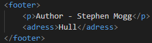

Footer tags define a footer for a document or section
You can have multiple footers on one page.
Footers usually contain:
Footer elements do not section content therefore isnt included in the document outline
A footer element should always be related to its parent element. It should also be the last element in that element.
This is how its coded:
The global and event attributes are supported.